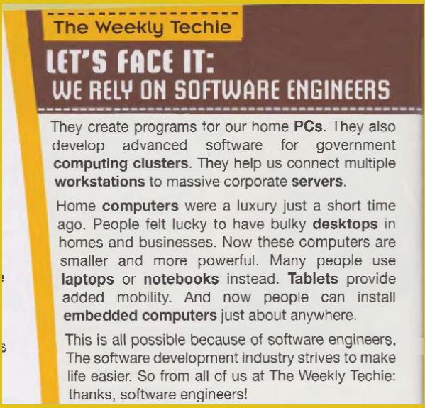
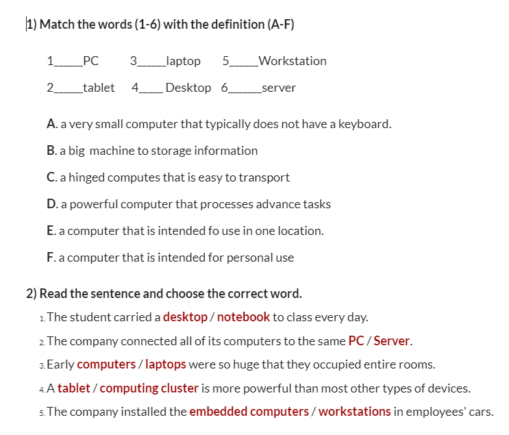

Acerca de la formacion

lo que aprenderas en formacion de ingles
- Vocabulario Básico
- Palabras cotidianas: Nombres de objetos comunes (casa, carro, mesa), lugares (escuela, supermercado), y personas (familia, amigos).
- Números: Contar y usar números en contextos simples.
- Colores y formas.
- Gramática Fundamental
- Pronombres: I, you, he, she, it, we, they.
- Verbos básicos: Ser/estar (to be), tener (to have), hacer (to do), ir (to go).
- Tiempos verbales simples: Presente simple (I eat, she runs), pasado simple (I ate, she ran), futuro simple (I will eat, she will run).
- Estructura de oraciones: Formar oraciones afirmativas, negativas e interrogativas.
- Artículos y preposiciones básicas: a, an, the; in, on, at, under.
- Conversaciones Básicas
- Saludar y despedirse: Hello, hi, goodbye, see you later.
- Presentarse: My name is…, I am from…, I am a student.
- Solicitar y dar información: What is your name?, Where are you from?, How old are you?
- Preguntar por direcciones y precios.
- Habilidades de Comprensión
- Escuchar: Comprender frases y preguntas sencillas en conversaciones lentas y claras.
- Leer: Leer y entender textos cortos y simples, como descripciones básicas y anuncios.
- Pronunciación
- Sonidos básicos del inglés.
- Entonación y ritmo en preguntas y respuestas.
- Cultura y Contexto
- Aspectos culturales básicos de países de habla inglesa.
- Modismos y expresiones comunes.
- Ejercicios Prácticos
- Diálogos: Practicar conversaciones simples con compañeros de clase.
- Escritura: Redactar frases y párrafos cortos sobre temas familiares.
- Lectura: Leer textos cortos y responder preguntas sobre ellos.
- Escucha: Escuchar audios o ver videos con conversaciones básicas.
- Instructor Yeiron Manyoma
Acerca de Me
Razones por la que se estudia progrmacion
- Actualmente soy aprendiz del SENA.
- Estoy interesado en aprender nuevas tecnologías.
- Me interesa practicar la lógica de programación.
- Uno de mis propósitos es aprender a programar con buenas prácticas.
Pasa Tiempo
actividad ¡Romper el hielo!
- What types of computers are typical for personal use? Answer: Typical computers for personal use include desktops, laptops, tablets, and sometimes even smartphones. These devices are used for everyday tasks like browsing the internet, checking email, watching videos, and playing games.
- What types of computers are typical for business use? Answer: For business use, typical computers include desktops, workstations, and laptops specifically designed for enterprise environments. These computers often have higher performance, better security features, and are used for tasks like data processing, running business applications, and communication.
- What type of computer is perfect for a software developer? Answer: A perfect computer for a software developer would be a high-performance desktop or laptop with a fast processor, ample RAM, and a large SSD. It should support multiple monitors and have a good keyboard and mouse setup to facilitate coding, testing, and running development environments efficiently.
- What is the main idea of the article? R: Technology arising from advances in software development.
- According to the article, which of the following is NOT something that software developers or engineers do? R: Increase the size of desktops for homes and businesses.
- What opinions does the article express about software engineering? R: It is responsible for making people lives easier.
Reading comprehension. Read the article one more time. Then, answer the questions below.
Sección 4
vocabulary
respuestas
respuestas
Sección 5

thanks